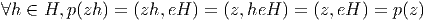
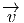
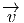

3.3 Fibrés associés
3.3.1 Introduction
Comme nous l’avons vu précédemment, à une variété différentiable donnée, on
peut attacher l’ensemble de tous les repères, et cet ensemble, qu’on désigne sous
le nom de fibré des repères possède une structure d’espace fibré principal. Il est
d’autres ensembles qu’on peut attacher à une variété donnée, par exemple,
l’ensemble de tous ses vecteurs tangents, ou l’ensemble de tous ses tenseurs de
type donné. Ces différents ensembles sont, d’une façon que nous allons rendre
précise, “associés” au fibré des repères, en ce sens que le groupe structural — le
groupe linéaire dans ce cas — agit également sur les composantes des vecteurs,
tenseurs etc
Plus généralement, nous allons définir des fibrés associés en “remplaçant” le
groupe structural d’un fibré principal par un ensemble sur lequel ce groupe opère.
D’un certain point de vue, on peut dire que les groupes eux-mêmes n’ont un
intérêt que parce qu’ils agissent (opèrent) sur des ensembles bien choisis et cette
théorie des actions de groupe — que nous avons sommairement décrite
dans la deuxième partie de cet ouvrage — est particulièrement riche
lorsqu’il s’agit d’une action linéaire sur un espace vectoriel (théorie des
représentations). Les groupes sont donc des “machines à agir sur des
espaces”. D’une façon analogue, nous allons considérer les fibrés principaux
comme des “machines à fabriquer des fibrés associés” et la théorie sera
particulièrement riche lorsque ces fibrés associés seront fabriqués à l’aide
d’une représentation de groupe sur un espace vectoriel (théorie des fibrés
vectoriels).
3.3.2 Espaces fibrés associés généraux
Soit P M un espace fibré principal (à droite), de groupe structural G, et
soit ρ une action (à gauche) de G sur un ensemble F. On obtient alors
une relation d’équivalence sur P × F en disant que (z,f) ∈ P × F est
équivalent à (z′,f′) ∈ P × F s’il existe un élément g de G qui soit tel
que z′ = zg et f′ = ρ(g-1)f. L’ensemble quotient E = P ×
GF prend le
nom de fibré associé à P via l’action de G sur F. En d’autres termes, on
identifie (z,f) avec (zg,ρ(g-1f)). Cette définition un peu abstraite ne
devrait pas rebuter le lecteur, en effet elle correspond à une situation
bien connue : supposons l’action ρ fixée une fois pour toutes et notons
g-1f l’objet que nous notions un peu plus haut ρ(g-1)f ; par ailleurs,
désignons par z.f la classe de (z,f) ; l’élément u = z.f de E n’est donc rien
d’autre que l’objet géométrique qui possède les “composantes” f dans
le “repère” z et les “composantes” g-1.f dans le “repère” zg, en effet,
u = z.f = zg.g-1f. On voit donc ici que u généralise la notion classique
et élémentaire de “vecteur”. Nous verrons un peu plus loin comment
récupérer la notion déjà introduite de vecteur tangent à une variété par cette
construction.
M un espace fibré principal (à droite), de groupe structural G, et
soit ρ une action (à gauche) de G sur un ensemble F. On obtient alors
une relation d’équivalence sur P × F en disant que (z,f) ∈ P × F est
équivalent à (z′,f′) ∈ P × F s’il existe un élément g de G qui soit tel
que z′ = zg et f′ = ρ(g-1)f. L’ensemble quotient E = P ×
GF prend le
nom de fibré associé à P via l’action de G sur F. En d’autres termes, on
identifie (z,f) avec (zg,ρ(g-1f)). Cette définition un peu abstraite ne
devrait pas rebuter le lecteur, en effet elle correspond à une situation
bien connue : supposons l’action ρ fixée une fois pour toutes et notons
g-1f l’objet que nous notions un peu plus haut ρ(g-1)f ; par ailleurs,
désignons par z.f la classe de (z,f) ; l’élément u = z.f de E n’est donc rien
d’autre que l’objet géométrique qui possède les “composantes” f dans
le “repère” z et les “composantes” g-1.f dans le “repère” zg, en effet,
u = z.f = zg.g-1f. On voit donc ici que u généralise la notion classique
et élémentaire de “vecteur”. Nous verrons un peu plus loin comment
récupérer la notion déjà introduite de vecteur tangent à une variété par cette
construction.
L’espace E est bien un espace fibré et on a une projection, encore notée π, de
E sur M, définie par π(z.f) = π(z) où le π du membre de droite se réfère à la
projection dans le fibré principal correspondant. Il est bien clair que cette
définition ne dépend pas du choix du représentant choisi (puisque les
différents z possibles sont tous dans la même fibre !) On se souvient, par
ailleurs, qu’il est parfaitement légitime et non ambigu de noter le point
x = π(z) de M sous la forme x = zG puisqu’il existe une correspondance
bi-univoque entre points de M et fibres de P. Par ailleurs, la fibre de la
nouvelle projection π (dans E) étant, par construction, homéomorphe à F,
on a donc, de fait, “remplacé” G par F, ce qui justifie de représenter
cette construction, associant E à P, par la figure suivante (fig. 3.13) :
On dit que G est le groupe structural du fibré associé E (attention, dans le cas
des fibrés associés, le groupe structural G n’a aucune raison d’être difféomorphe à
la fibre type F). Notons enfin que dimE = dimM + dimF.
Avant de donner quelques exemples de tels espaces, il importe de noter que,
sauf exceptions, le groupe structural G n’agit pas sur le fibré associé E puisque E
est précisément obtenu via un quotient de l’action simultanée de G sur P (c’est à
dire sur les “repères”) et sur F (c’est à dire les “composantes”).
Une situation familière, bien connue du lecteur, nous est fournie par l’exemple
des espaces vectoriels :
Soit E un espace vectoriel de dimension n ; les éléments de E sont nos
vecteurs familiers ; il faut bien voir que le groupe linéaire GL(n, I R), défini
comme groupe de matrices, ne sait pas comment agir sur les vecteurs si aucune
base n’a été choisie. Par contre, il sait agir sur les bases de E (il fait passer d’une
base à l’autre) et, une base étant choisie, il sait également agir sur les
composantes des vecteurs de E. Il existe bien un groupe qui sait agir sur les
vecteurs eux-mêmes, c’est le groupe AutE des automorphismes de E, mais ce
groupe ne peut s’identifier à GL(n,, I R) que moyennant le choix d’une
base. Un espace vectoriel usuel n’est autre chose qu’un espace fibré sur
un point (la base est un point et la fibre s’identifie à l’espace vectoriel
lui-même). Après quelques moments de réflexion passés à examiner ce cas assez
trivial, mais instructif, le lecteur pourra sans doute se demander quel est
l’objet généralisant AutE lorsqu’on passe de la situation bien connue
évoquée ci-dessus au cas des espaces fibrés plus généraux où la base
est, en général, une variété. Il se trouve que ce groupe AutE admet une
généralisation, c’est à dire qu’il existe bien un groupe qui agit sur E :
c’est un objet désigné sous le nom de groupe de jauge et son étude fera
l’objet de la section 3.6.2. Nous verrons qu’il est, en général, de dimension
infinie.
Une des conclusions que nous voulons tirer de la présente discussion est la
suivante : le groupe structural G d’un fibré associé n’agit pas sur l’espace fibré
associé en question ; il y a bien un groupe AutE qui agit sur E, mais ce groupe
ne coïncide pas avec G.
3.3.3 Espaces fibrés en espaces homogènes, associés à un fibré principal de
groupe structural G
Soit P = P(M,G) un fibré principal et H un sous groupe de Lie du groupe
structural G. On considère l’action à gauche de G sur l’espace homogène
F = G∕H et on construit, en suivant la méthode de construction générale des
fibrés associés, l’ensemble E = P ×GG∕H. Les fibres de E sont difféomorphes à
l’espace homogènes G∕H et la base est toujours M. La dimension de E est donc
égale à dimM + dimG∕H = dimM + dimG - dimH et on peut représenter E à
l’aide de la figure suivante (fig. 3.14) :
On peut noter E = PmodH ou simplement E = P∕H.
A l’aide de cette méthode générale et des exemples de fibrés principaux
donnés précédemment, on peut ainsi fabriquer une foule de nouveaux espaces. En
voici quelques exemples :
3.3.4 Fibration principale relative à un fibré quotient
La figure ci-dessous (3.16), le fait que dimP = dimE + dimH et le fait que G soit
lui-même un H-fibré principal au dessus de G∕H, suggèrent que l’espace total P
du fibré principal P(M,G) dont on est parti peut également être considéré
comme fibré principal P(E,H) de fibre H au-dessus du fibré associé
E = P ×GG∕H. Il en est effectivement ainsi.
Soit z ∈ P(M,G), on considère l’application p : P E = P ×GG∕H = PmodH
définie par p(z) = (z,eH), où e désigne l’élément neutre du groupe G. La fibre
passant par z de cette application est simplement zH puisque
E = P ×GG∕H = PmodH
définie par p(z) = (z,eH), où e désigne l’élément neutre du groupe G. La fibre
passant par z de cette application est simplement zH puisque
 On
obtient donc ainsi un nouveau fibré principal Q(E,H) possédant le même espace
total que P(M,G) mais cette fois-ci avec une base E = PmodH et un groupe
structural H. Pour tout choix d’un sous groupe H de G, on obtient ainsi une
deuxième fibration principale de l’espace P représentée par la figure (3.16).
3.3.5 Espaces fibrés en … espaces fibrés
Voici une famille d’exemples assez surprenante : on se donne P1 = P1(M1,G) et
P2(M2,G), deux espaces fibrés principaux possédant le même groupe structural.
On supposera, de plus, que P1 est un espace fibré à droite —comme d’habitude—
mais que P2 est un espace fibré à gauche, ce qui n’est pas vraiment une
restriction puisqu’on peut toujours passer d’une action à droite à une
action à gauche (voir le chapitre sur les actions de groupes). On va alors
fabriquer un fibré associé en choisissant P = P1, F = P2 et en suivant la
méthode générale de construction des fibrés associés. On obtient ainsi
un espace E = P1 ×GP2 dont la base est M1 et dont la fibre type est
P2.
Voici un exemple de cette construction. Soit P1 = G = P1(G∕H,H),
un groupe de Lie fibré en sous groupes de type H au dessus de G∕H et
P2 = K = P2(H\K,H), un autre groupe de Lie fibré en sous groupe de type H
au dessus de H\K ; on fabrique alors E = G ×HK qui a pour base G∕H et
pour fibre type K. Une situation encore plus particulière correspond au choix
G = K.
3.3.6 Le fibré adjoint E = AdP
Soit P = P(M,G) un fibré principal. On peut faire agir G sur lui-même via
l’action adjointe g ∈ G,Ad(g)k = gkg-1. On choisit alors F = G, ρ = Ad, et on
construit E = P ×AdG, fibré noté habituellement AdP. Cet espace fibré
associé a ceci de particulier que sa fibre type est un groupe de Lie —c’est le
groupe structural lui-même— et donc, au niveau du “dessin”, rien ne le
distingue de P, puisqu’ils ont tous deux même base M et même fibre
type G. En revanche, G opère, comme il se doit, sur le fibré principal P,
alors qu’il ne sait pas agir sur AdP. Cet exemple illustre bien la nécessité
d’imposer la condition 2 dans la définition des fibrés principaux (voir
section 3.2.1). A tout fibré principal P, on peut donc associer un fibré
en groupes AdP, dont l’importance s’avérera essentielle (nous verrons
plus tard que les sections de AdP sont les transformations de jauge) .
Notons pour terminer que G agit non seulement sur lui-même par l’action
adjointe Ad mais aussi sur Lie(G) par l’action adjointe ad définie par
ad(g)X = gXg-1, où X appartient à l’algèbre de Lie de G. La construction
générale peut encore être effectuée dans ce cas, et on fabrique ainsi le fibré
associé adP = P ×GLie(G) qui est un fibré en algèbres de Lie, de base
M.
3.3.7 Le rôle du normalisateur
- On vient de construire un nouvel espace fibré en faisant agir G sur
lui-même par l’action adjointe. On pourrait se demander pourquoi ne
pas faire tout simplement agir G sur lui-même par multiplications à
gauche, et fabriquer le fibré associé correspondant. Bien sur, on le
peut, mais alors, on n’obtient ainsi rien de neuf ! En effet, partons de
P = P(M,G), fibré principal ( à droite) et construisons E = P ×GG
via l’action (multiplication) à gauche de G sur G. La prise du quotient
identifie ces deux actions —à droite de P et à gauche de G— et
ces deux actions s’annihilent donc mutuellement (voir la remarque en
fin de section 3.3.2). Par contre, il existe encore une action de G à
droite de la fibre F = G, de sorte que l’espace obtenu E s’identifie
canoniquement à P lui-même. La construction n’offre donc aucun
intérêt.
- Dans le cas de fibrations en espaces homogènes du type E = P ×
GG∕H, nous avons vu que l’action de G disparaissait, en général, au
niveau de E. L’exemple qui précède (où H se déduit à l’identité)
offre un bon contre-exemple, mais il s’agit là d’une situation un
peu extrême… On pourrait se demander s’il existe des situations
intermédiaires, c’est à dire des situations où il existe encore une
certaine action à droite au niveau du fibré associé E. La réponse est
simple et a déjà été trouvée dans notre étude succincte des espaces
homogènes des groupes de Lie : l’espace G∕H est toujours muni
d’une action de G évidente, du côté gauche, mais également d’une
action à droite du groupe N|H où N désigne le normalisateur de H
dans G ; en effet, on peut écrire (gH)n = (gn)H si n est un élément
de N. Schématiquement, on a
 Le groupe N|H agit donc toujours, à droite, sur l’espace fibré E =
P ×GG∕H. Bien souvent, ce groupe N|H est discret, mais il peut ne
pas l’être. On a également le cas extrême où N et G coïncident ;
dans un tel cas, H est sous groupe distingué de G, l’espace homogène
G∕H est un groupe, et E, muni de cette action à droite, devient un
fibré principal. Dans le cas général où N et G sont distincts, et où H
n’est pas trivial, il faut se rappeler (voir section 3.2.7) que G∕H est
lui même un N|H fibré principal au dessus de G∕N ; on fabrique
ainsi une projection de E sur M ×G∕N et E peut alors être considéré
comme N|H fibré principal au dessus de M × G∕N.
Le groupe N|H agit donc toujours, à droite, sur l’espace fibré E =
P ×GG∕H. Bien souvent, ce groupe N|H est discret, mais il peut ne
pas l’être. On a également le cas extrême où N et G coïncident ;
dans un tel cas, H est sous groupe distingué de G, l’espace homogène
G∕H est un groupe, et E, muni de cette action à droite, devient un
fibré principal. Dans le cas général où N et G sont distincts, et où H
n’est pas trivial, il faut se rappeler (voir section 3.2.7) que G∕H est
lui même un N|H fibré principal au dessus de G∕N ; on fabrique
ainsi une projection de E sur M ×G∕N et E peut alors être considéré
comme N|H fibré principal au dessus de M × G∕N.
3.3.8 Les espaces fibrés vectoriels
“A tout seigneur, tout honneur”, voici les espaces fibrés vectoriels, espaces qui
tiennent une place de choix dans la théorie des espaces fibrés, et dont l’étude
peut se faire (et se fait souvent) de façon indépendante de la notion de
fibré principal. Dans notre approche, cependant, les fibrés vectoriels sont
des espaces fibrés associés comme les autres, à cette différence près que
la fibre F choisie est un espace vectoriel (I Rn ou lCn) et que l’action ρ
de G sur F est une représentation de G sur cet espace vectoriel. Nous
devons donc nous répéter : soit P = P(M,G) un fibré vectoriel et ρ une
représentation de G sur l’espace vectoriel F ; on construit le fibré vectoriel
E = P ×GF. Les éléments  de E sont vraiment ici des “vecteurs”
(gardons la flèche pour le moment) et on pourra sans danger —et avec
profit— utiliser une notation “avec des indices”. Comme on l’a vu en
section 3.3.2, l’élément
de E sont vraiment ici des “vecteurs”
(gardons la flèche pour le moment) et on pourra sans danger —et avec
profit— utiliser une notation “avec des indices”. Comme on l’a vu en
section 3.3.2, l’élément  de E peut s’écrire
de E peut s’écrire  = (ϵ).(v) = (ϵg).(ρ(g-1v)),
avec ϵ ∈ P et v ∈ F, ce qui se lit “ possède les composantes (v) dans
le repère (ϵ) et les composantes (ρ(g-1v)) dans le repère (ϵg)”. Si on
introduit des indices, on écrira
= (ϵ).(v) = (ϵg).(ρ(g-1v)),
avec ϵ ∈ P et v ∈ F, ce qui se lit “ possède les composantes (v) dans
le repère (ϵ) et les composantes (ρ(g-1v)) dans le repère (ϵg)”. Si on
introduit des indices, on écrira  = ϵivi où les vi sont des nombres réels ou
complexes et où {ϵi} désigne un élément de P, c’est à dire un repère
généralisé au point x, repère qui peut, dans les cas simples (cas où ρ
désigne une représentation fondamentale de G, par exemple) être considéré
comme base de la fibre au point x. Schématiquement, on a la figure 3.17
= ϵivi où les vi sont des nombres réels ou
complexes et où {ϵi} désigne un élément de P, c’est à dire un repère
généralisé au point x, repère qui peut, dans les cas simples (cas où ρ
désigne une représentation fondamentale de G, par exemple) être considéré
comme base de la fibre au point x. Schématiquement, on a la figure 3.17
Le fibré vectoriel est dit réel ou complexe suivant que F = I Rn ou lCn et on
pourra écrire E = E(M,F). Le lecteur aura deviné que la notation utilisée ici
permet de nommer la base, la fibre et l’espace total correspondant.
L’exemple fondamental est celui fourni par le fibré tangent à une variété M.
Nous avons déjà défini cet espace de façon élémentaire au premier chapitre. Il
s’introduit ici de façon parfaitement naturelle : Soit P = FM le fibré principal
des repères linéaires sur M ; le groupe structural est G = GL(m, I R) avec
m = dimM. On considère la représentation fondamentale de G sur I Rm et on
construit le fibré tangent TM = FM ×GL(m,I R)I Rm comme fibré associé à FM.
Les éléments de TM sont, par définition, des vecteurs tangents qu’on
note v = ϵμ.vμ, où ϵ
μ désigne un élément de FM, c’est à dire aussi une
base de T(M,x), l’espace tangent en x, c’est à dire la fibre de TM au
dessus de x ∈ M. On décide également de ne plus mettre de flèche sur les
vecteurs. Noter que nous écrivons les composantes vμ de v à droite de
la base ϵμ de façon à rester compatible avec la notation générale que
nous avons introduite précédemment pour les espaces fibrés associés. Soit
Λ = (Λμν) une matrice de GL(m, I R), on retrouve alors la propriété bien
connue

Les tenseurs contravariants et covariants de tous ordres, qui ne sont autres que
les éléments de (TM)⊗p ⊗(T*M)⊗q déjà introduits au premier chapitre
s’interprètent ici comme des éléments des espaces fibrés vectoriels FM ×GF où
F désigne la puissance tensorielle appropriée de I Rm et où GL(m, I R) agit sur F
par la représentation tensorielle correspondante.
Les exemples qui précèdent sont d’une utilisation courante en physique de
l’espace-temps (théorie de la gravitation) mais il faut bien voir qu’il n’y a pas
grande différence conceptuelle entre vecteurs de l’espace temps et … quarks ! En
effet, en théorie des interactions fortes, par exemple, on considère un fibré
principal P de groupe structural SU(3) au dessus de l’espace-temps M, on choisit
alors l’action de SU(3) sur lC3 et on construit le fibré vectoriel associé
P ×SU(3)lC3 ; un quark au point x est alors décrit par un élément de ce
fibré vectoriel. Nous reviendrons plus loin sur ces exemples utilisés en
physique.
3.3.9 Trivialité des fibrés vectoriels, variétés parallélisables
Revenons un peu sur la notion de trivialité déjà étudiée, dans le cas des fibrés
principaux, en section 3.2.5. On se souvient qu’une condition nécessaire et
suffisante, pour assurer la trivialité d’un fibré principal P, est l’existence d’une
section globale. Contrairement au cas des fibrés principaux, l’existence, pour un
fibré vectoriel, de sections globales, est une propriété évidente : tout
fibré vectoriel, trivial ou non, possède des sections globales, par exemple
la section nulle. Ce n’est donc pas ainsi qu’on détecte la trivialité. Par
contre, nous avons vu que, d’une certaine façon, on pouvait considérer un
élément du fibré principal P comme une base dans une certaine fibre du
fibré associé E. L’existence pour P d’une section globale équivaut donc,
pour E, à l’existence de n sections indépendantes en tout point de M
(n désignant ici la dimension de la fibre type). On dit qu’une variété
est parallélisable si son fibré tangent est trivial. De façon générale, les
groupes de Lie sont des variétés parallélisables. En effet la donnée d’une
base dans l’algèbre de Lie 𝔤 du groupe G détermine n = dim(G) champs
de vecteurs indépendants en tous points de G (les champs invariants à
gauche associés). On voit ainsi que le fibré tangent TG possède n sections
indépendantes (il est donc trivial), et que, ce qui revient au même, le
fibré principal FG (le fibré principal des repères sur la variété G, fibré
dont le groupe structural est GL(n)) possède une section globale. Les
groupes ne sont pas les seules variétés parallélisables ; l’exemple le plus
célèbre de variété ne possédant pas de structure de groupe mais étant
néanmoins parallélisable est sans doute celui de la sphère S7 (seules les sphères
S0, S1 et S3 possèdent une structure de groupe). La démonstration de
cette propriété repose sur l’utilisation du produit de Cayley dans R8
(l’“algèbre” des octonions). Les sphères Sn de dimension n = 0, 1, 3, 7 sont
les seules sphères à être parallélisables. Signalons sans démonstration
quelques autres exemples de variétés parallélisables : les variétés de Stiefel
complexes SU(n)∕SU(k) (en excluant les sphères, c’est à dire en supposant
k≠n - 1), les espaces homogènes qui sont des quotients de SU(n) par
des sous-groupes du type SU(2) ×… × SU(2) (à condition d’exclure une
seule exception, la sphère S5 = SU(3)∕SU(2)), les quotients du type
Sp(n)∕SU(2), l’espace homogène SU(4)∕H où H est le sous-groupe de
SU(4) isomorphe à SU(2) constitué des matrices du type  , avec
A ∈ SU(2).
, avec
A ∈ SU(2).
3.3.10 Sections de fibrés associés et champs
- Soit P = P(M,G) un fibré principal et E = E(M,F) un fibré
associé . Nous savons ce qu’est une section σ d’un espace fibré, à
savoir une application différentiable de M dans P, ou dans E, telle
que πoσ soit l’identité de M, π désignant la projection du fibré
correspondant. L’ensemble des sections globales est quelquefois vide
(cas des fibrés principaux non triviaux) mais on sait qu’un fibré
vectoriel admet de nombreuses sections globales. Soit ΓE l’ensemble de
ces sections. Dans le cas où E est le fibré tangent TM d’une variété, il
est évident qu’une section n’est autre qu’un champ de vecteurs ; de la
même façon, les champs de tenseurs d’ordre supérieur sont également
des sections de fibrés vectoriels appropriés.
- En physique, les champs de matière classiques sont toujours décrits
par des sections de fibrés associés (le mot “classique” signifiant ici
qu’on fait allusion aux théories de champs classiques et non aux
théories de champs quantiques). C’est ainsi qu’un champ de quarks,
par exemple, est une section d’un fibré à fibres lC3, mentionné au
paragraphe précédent, et que les champs de matière des “modèles σ
non linéaires” sont des sections de fibrés en espaces homogènes. Pour
cette raison, on dira quelquefois champ de matière au lieu de “section
de fibré associé”. L’ensemble ΓE est donc l’espace des champs de
matière caractérisé par le fibré E = E(M,F).
- ll existe au moins quatre descriptions possibles d’un tel champ de
matière ; illustrons ces quatre descriptions dans le cas des champs de
vecteurs.
- On peut considérer x ∈ M → v(x) ∈ E comme une section de E
(cf. supra) et on écrit
 (x) = ϵμ(x).vμ(x).
(x) = ϵμ(x).vμ(x).
- On peut considérer v (laissons tomber les flèches !) comme une
application de P dans F (et non plus de M dans E) qui,
au repère ϵ = (ϵμ), un élément de P, associe le n-uplet de
composantes vμ (un élément de F). Ce point de vue redonne (au
deuxième degré !) un sens intrinsèque à la notation “avec des
indices”. Cette application de P dans F n’est pas quelconque,
elle est équivariante. En effet, si le repère (ϵμ) a pour image
vμ, il faut que le repère (ϵ
μ)g ait pour image ρ(g-1)vμ. Ici g
et ρ désignent respectivement un élément du groupe structural
et la représentation définissant le fibré associé. Il existe une
correspondance bijective entre l’ensemble des sections d’un fibré
associé E = E(M,F) et l’ensemble des applications équivariantes
du fibré principal correspondant P dans la fibre type F. On peut
donc identifier ΓE = Ω0(M,E) avec l’ensemble des applications
de P dans F qui sont équivariantes, c’est à dire Ωρ0(P,F). Cette
identification se généralise au cas des p-formes sur M à valeurs
dans les sections de E : Ωp(M,E) ~ Ω
ρp(P,F).
- On peut évidemment fixer —tout au moins localement— une
section de P, c’est à dire choisir un “repère mobile” et caractériser
v(x) par ses composantes dans le repère choisi. C’est cette méthode
qui est la plus utilisée dans les calculs pratiques (on ne regarde
que vμ(x)) mais il faut alors se rappeler qu’on a effectué un choix
et que ce choix est d’ordinaire local.
- Les trois descriptions ci-dessus suffisent généralement à discuter le
cas de la “géométrie commutative” (la géométrie tout court ?)
ou de son pendant physique, la théorie classique des champs. Cela
dit, dans le cas des espaces fibrés vectoriels, il existe une quatrième
description que nous n’aurons pas le loisir de discuter plus avant
mais qui se généralise parfaitement au cas de le géométrie non
commutative. La voici. On sait que l’ensemble des fonctions sur M
constitue une algèbre (commutative) ; soit v un élément de ΓE
(un champ de matière) et soit f une fonction sur la base, alors, il
est bien évident que fv est encore un élément de ΓE. En d’autres
termes, les champs de matière —les sections de E— constituent
un module sur l’algèbre des fonctions sur M (il s’agit même d’un
bimodule puisque l’algèbre des fonctions sur M est commutative
et d’un bimodule particulier puisque les deux actions à droite et à
gauche coïncident).